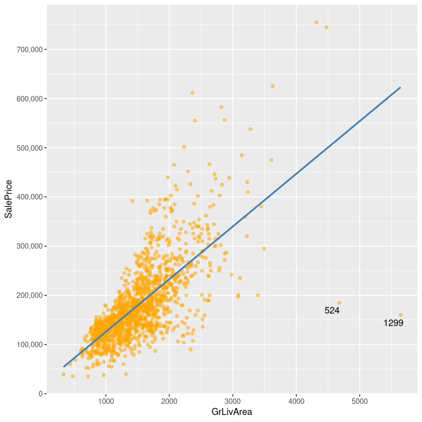
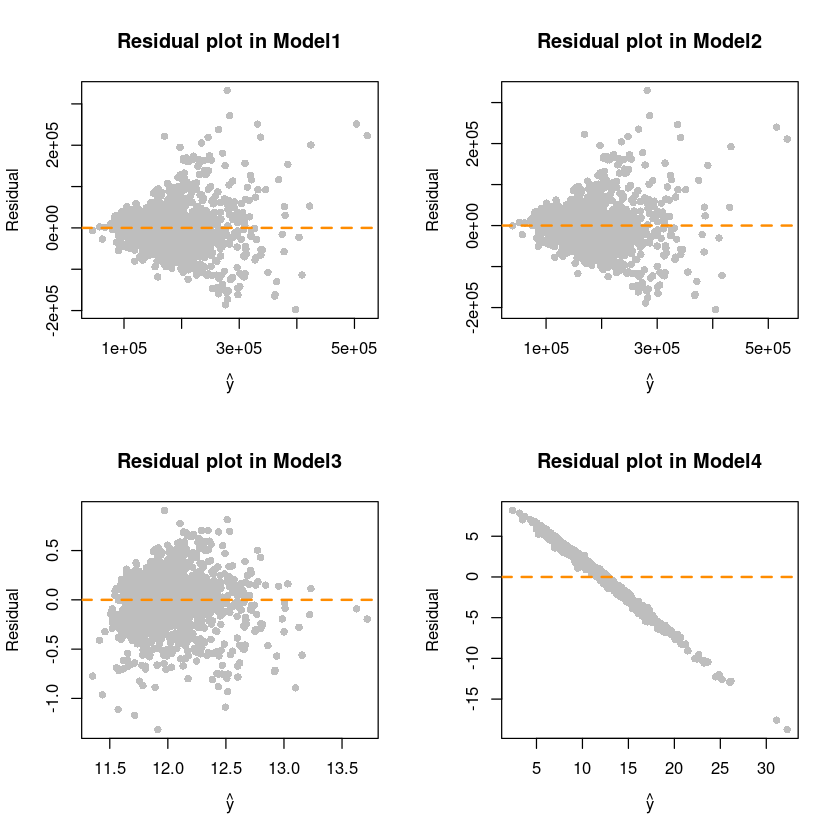

피드백 반영
이상값들을 제거하고 모형적합을 새로 해보자.
앞서 분석내용에서 절편을 제거하기 전과 후의 회귀모형의 \(R^2\) 값 차이가 이상하리만큼 차이가 컸음. (\(R^2:0.5021 \to 0.91836\)) 혹시 이상값 때문일까?
| Id | MSSubClass | MSZoning | LotFrontage | LotArea | Street | Alley | LotShape | LandContour | Utilities | ⋯ | PoolArea | PoolQC | Fence | MiscFeature | MiscVal | MoSold | YrSold | SaleType | SaleCondition | SalePrice | |
|---|---|---|---|---|---|---|---|---|---|---|---|---|---|---|---|---|---|---|---|---|---|
| <int> | <int> | <chr> | <int> | <int> | <chr> | <chr> | <chr> | <chr> | <chr> | ⋯ | <int> | <chr> | <chr> | <chr> | <int> | <int> | <int> | <chr> | <chr> | <int> | |
| 1 | 1 | 60 | RL | 65 | 8450 | Pave | NA | Reg | Lvl | AllPub | ⋯ | 0 | NA | NA | NA | 0 | 2 | 2008 | WD | Normal | 208500 |
| 2 | 2 | 20 | RL | 80 | 9600 | Pave | NA | Reg | Lvl | AllPub | ⋯ | 0 | NA | NA | NA | 0 | 5 | 2007 | WD | Normal | 181500 |
| 3 | 3 | 60 | RL | 68 | 11250 | Pave | NA | IR1 | Lvl | AllPub | ⋯ | 0 | NA | NA | NA | 0 | 9 | 2008 | WD | Normal | 223500 |
| 4 | 4 | 70 | RL | 60 | 9550 | Pave | NA | IR1 | Lvl | AllPub | ⋯ | 0 | NA | NA | NA | 0 | 2 | 2006 | WD | Abnorml | 140000 |
| 5 | 5 | 60 | RL | 84 | 14260 | Pave | NA | IR1 | Lvl | AllPub | ⋯ | 0 | NA | NA | NA | 0 | 12 | 2008 | WD | Normal | 250000 |
| 6 | 6 | 50 | RL | 85 | 14115 | Pave | NA | IR1 | Lvl | AllPub | ⋯ | 0 | NA | MnPrv | Shed | 700 | 10 | 2009 | WD | Normal | 143000 |
p1 <- ggplot(data=df, aes(x=SalePrice)) +
geom_histogram(fill='darkgreen')
# scale_x_continuous(breaks= seq(0, 800000, by=100000), labels = comma)
p2 <- ggplot(data=df, aes(x=GrLivArea)) +
geom_histogram(fill='darkgreen')
grid.arrange(p1, p2, ncol=2)`stat_bin()` using `bins = 30`. Pick better value with `binwidth`.
`stat_bin()` using `bins = 30`. Pick better value with `binwidth`.
- 생각해보니까 위의 히스토그램만 봐도 집값이 이상적으로 매우 높은 관측치들이 몇몇 보임. (매우 비싼 고급 주택?)
ggplot(data = df[!is.na(df$SalePrice), ],
aes(x = GrLivArea, y = SalePrice)) +
geom_point(col='orange', alpha=0.5) +
geom_smooth(method = "lm", se = F, color = "steelblue") +
scale_y_continuous(breaks = seq(0, 800000, by=100000), labels = comma) +
geom_text_repel(aes(label = ifelse(df$GrLivArea[!is.na(df$SalePrice)] > 4500,
rownames(df), '')))`geom_smooth()` using formula = 'y ~ x'
실거주면적이 \(4000\tt{sqft}\) (약 112평) 이상인데 \(200,000\) (2억 6천만원)달러??
Remove Outlier
SalePrice GrLivArea
Min. : 34900 Min. : 334
1st Qu.:129975 1st Qu.:1130
Median :163000 Median :1464
Mean :180921 Mean :1515
3rd Qu.:214000 3rd Qu.:1777
Max. :755000 Max. :5642 선형회귀모형 적합 (model1)
Call:
lm(formula = SalePrice ~ GrLivArea, data = df_out)
Coefficients:
(Intercept) GrLivArea
7169 115
Call:
lm(formula = SalePrice ~ GrLivArea, data = df_out)
Residuals:
Min 1Q Median 3Q Max
-197730 -29815 -337 23239 332534
Coefficients:
Estimate Std. Error t value Pr(>|t|)
(Intercept) 7168.970 4432.501 1.617 0.106
GrLivArea 115.040 2.782 41.358 <2e-16 ***
---
Signif. codes: 0 ‘***’ 0.001 ‘**’ 0.01 ‘*’ 0.05 ‘.’ 0.1 ‘ ’ 1
Residual standard error: 53920 on 1456 degrees of freedom
Multiple R-squared: 0.5402, Adjusted R-squared: 0.5399
F-statistic: 1710 on 1 and 1456 DF, p-value: < 2.2e-16선형회귀모형 적합 (절편X, model2)
Call:
lm(formula = SalePrice ~ 0 + GrLivArea, data = df_out)
Coefficients:
GrLivArea
119.3
Call:
lm(formula = SalePrice ~ 0 + GrLivArea, data = df_out)
Residuals:
Min 1Q Median 3Q Max
-205038 -30039 1205 24581 329621
Coefficients:
Estimate Std. Error t value Pr(>|t|)
GrLivArea 119.3044 0.8867 134.5 <2e-16 ***
---
Signif. codes: 0 ‘***’ 0.001 ‘**’ 0.01 ‘*’ 0.05 ‘.’ 0.1 ‘ ’ 1
Residual standard error: 53950 on 1457 degrees of freedom
Multiple R-squared: 0.9255, Adjusted R-squared: 0.9255
F-statistic: 1.81e+04 on 1 and 1457 DF, p-value: < 2.2e-16Summary
절편을 제거한 것이 회귀모형 설명력에 큰 영향이 있는걸까?
여전히 절편을 제거한 후에 모형의 설명력 차이가 크다.
이전 분석내용과 차이점은 이상치를 제거하기 전보다 설명력이 좀 더 좋아졌다는 것이다.
| 변수 | 스케일링 | 변수변환 | 변동사항 | R2 |
score[1,] <- c('집값, 실거주면적','X','X','X','단순선형회귀(절편O)',0.5021)
score[2,] <- c('집값, 실거주면적','X','X','X','단순선형회귀(절편X)',0.9186)
score[3,] <- c('집값, 실거주면적','X','X','O','단순선형회귀(절편O) + 이상치제거',0.5402)
score[4,] <- c('집값, 실거주면적','X','X','O','단순선형회귀(절편X) + 이상치제거',0.9255)
score| 변수 | 스케일링 | 변수변환 | 이상치제거 | 변동사항 | R2 |
|---|---|---|---|---|---|
| 집값, 실거주면적 | X | X | X | 단순선형회귀(절편O) | 0.5021 |
| 집값, 실거주면적 | X | X | X | 단순선형회귀(절편X) | 0.9186 |
| 집값, 실거주면적 | X | X | O | 단순선형회귀(절편O) + 이상치제거 | 0.5402 |
| 집값, 실거주면적 | X | X | O | 단순선형회귀(절편X) + 이상치제거 | 0.9255 |
변수변환
지금부터 분석할 데이터는 이상치가 제거된 데이터임. (
df_out.csv)
price변수에 로그변환을 시켜주자.
- 로그변환 전의 분포와는 달리 skew가 완화되어 어느정도 정규분포를 따르는 것 같음..
| SalePrice | GrLivArea | |
|---|---|---|
| <dbl> | <int> | |
| 1 | 12.24769 | 1710 |
| 2 | 12.10901 | 1262 |
| 3 | 12.31717 | 1786 |
| 4 | 11.84940 | 1717 |
| 5 | 12.42922 | 2198 |
| 6 | 11.87060 | 1362 |
- df_out은 변동 X (원본 그대로)
절편 있는 회귀모형 (model3)
Call:
lm(formula = SalePrice ~ GrLivArea, data = df_log)
Coefficients:
(Intercept) GrLivArea
1.116e+01 5.708e-04
Call:
lm(formula = SalePrice ~ GrLivArea, data = df_log)
Residuals:
Min 1Q Median 3Q Max
-1.31695 -0.14499 0.03338 0.16232 0.90721
Coefficients:
Estimate Std. Error t value Pr(>|t|)
(Intercept) 1.116e+01 2.263e-02 493.23 <2e-16 ***
GrLivArea 5.708e-04 1.420e-05 40.19 <2e-16 ***
---
Signif. codes: 0 ‘***’ 0.001 ‘**’ 0.01 ‘*’ 0.05 ‘.’ 0.1 ‘ ’ 1
Residual standard error: 0.2753 on 1456 degrees of freedom
Multiple R-squared: 0.5259, Adjusted R-squared: 0.5256
F-statistic: 1615 on 1 and 1456 DF, p-value: < 2.2e-16절편없는 회귀모형 (model4)
Call:
lm(formula = SalePrice ~ 0 + GrLivArea, data = df_log)
Coefficients:
GrLivArea
0.00721
Call:
lm(formula = SalePrice ~ 0 + GrLivArea, data = df_log)
Residuals:
Min 1Q Median 3Q Max
-18.7523 -0.5975 1.5293 3.6004 8.1707
Coefficients:
Estimate Std. Error t value Pr(>|t|)
GrLivArea 7.210e-03 5.864e-05 123 <2e-16 ***
---
Signif. codes: 0 ‘***’ 0.001 ‘**’ 0.01 ‘*’ 0.05 ‘.’ 0.1 ‘ ’ 1
Residual standard error: 3.568 on 1457 degrees of freedom
Multiple R-squared: 0.9121, Adjusted R-squared: 0.912
F-statistic: 1.512e+04 on 1 and 1457 DF, p-value: < 2.2e-16Summary
이상값 제거 + 로그변환 까지 한 결과를 이전 분석내용과 비교한 결과는 다음과 같다.
score[1,] <- c('집값, 실거주면적','X','X','X','단순선형회귀(절편O)',0.5021)
score[2,] <- c('집값, 실거주면적','X','X','X','단순선형회귀(절편X)',0.9186)
score[3,] <- c('집값, 실거주면적','X','X','O','단순선형회귀(절편O) + 이상치제거',0.5402)
score[4,] <- c('집값, 실거주면적','X','X','O','단순선형회귀(절편X) + 이상치제거',0.9255)
score[5,] <- c('집값, 실거주면적','X','O','O','단순선형회귀(절편X) + 이상치제거',0.5259)
score[6,] <- c('집값, 실거주면적','X','O','O','단순선형회귀(절편X) + 이상치제거',0.9120)잔차분석
## Model1 residual plot
par(mfrow=c(2,2))
plot(fitted(model1),resid(model1), col = 'grey', pch=16,
xlab = expression(hat(y)),
ylab = "Residual",
main = "Residual plot in Model1")
abline(h=0, col='darkorange', lty=2, lwd=2)
plot(fitted(model2),resid(model2), col = 'grey', pch=16,
xlab = expression(hat(y)),
ylab = "Residual",
main = "Residual plot in Model2")
abline(h=0, col='darkorange', lty=2, lwd=2)
plot(fitted(model3),resid(model3), col = 'grey', pch=16,
xlab = expression(hat(y)),
ylab = "Residual",
main = "Residual plot in Model3")
abline(h=0, col='darkorange', lty=2, lwd=2)
plot(fitted(model4),resid(model4), col = 'grey', pch=16,
xlab = expression(hat(y)),
ylab = "Residual",
main = "Residual plot in Model4")
abline(h=0, col='darkorange', lty=2, lwd=2)
- Model4 뭔가 이상하다… 로그변환 하면 안되나..?
- 절편이 없는 회귀모형은 bptest가 안된다. \(\to\) 왤까???
- bptest가 안되더라도 model4의 residual plot은 매우 이상함.
ERROR: Error in bptest(model2): the auxiliary variance regression requires at least an intercept and a regressor